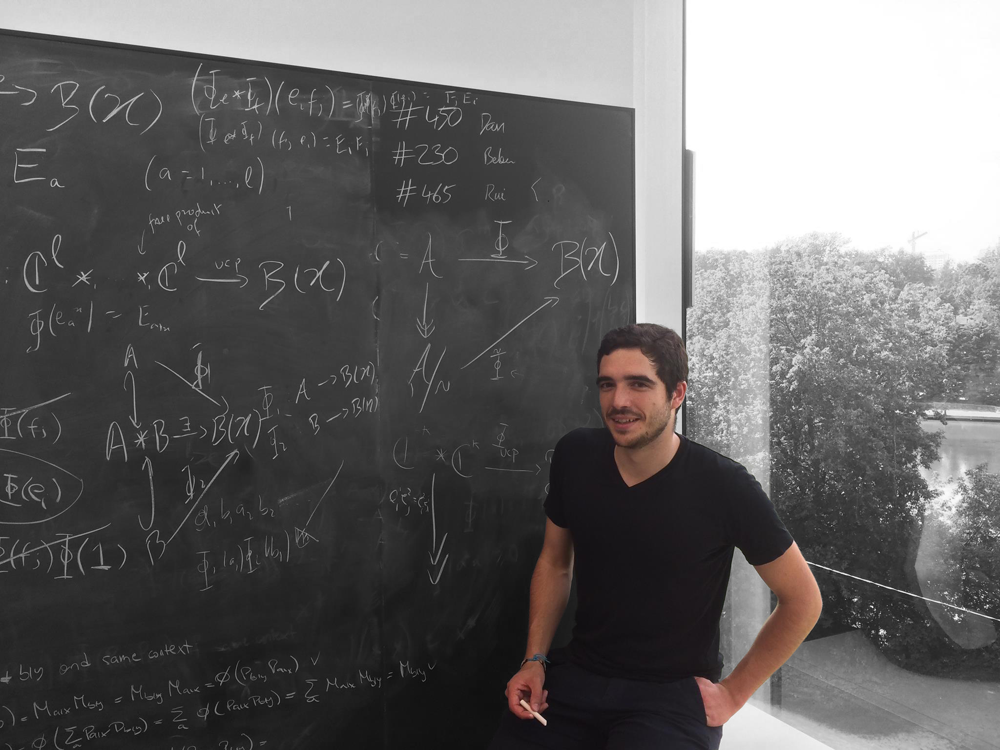

Biography
I'm currently a Staff Researcher at the International Iberian Nanotechnology Laboratory (INL) in Braga, Portugal. I'm a member of the research group on Quantum and Linear-Optical Computation, which is led by Ernesto F. Galvão.
I obtained a DPhil in Computer Science from the University of Oxford in 2015, supervised by Samson Abramsky and Andreas Döring, and subsequently held postdoctoral positions at Oxford (2015–19) with Samson Abramsky and Edinburgh (2019–20) with Chris Heunen, and a research fellowship at the Simons Institute, UC Berkeley (2017).
Positions
Feb 2020 –
Staff Researcher
Quantum and Linear-Optical Computation (QLOC) group
INL – International Iberian Nanotechnology Institute
Staff Researcher
Quantum and Linear-Optical Computation (QLOC) group
INL – International Iberian Nanotechnology Institute
Aug 2019 – Jan 2020
Research Associate (postdoc with Chris Heunen)
Quantum Informatics, Laboratory for Foundations of Computer Science (LFCS)
School of Informatics, University of Edinburgh
Research Associate (postdoc with Chris Heunen)
Quantum Informatics, Laboratory for Foundations of Computer Science (LFCS)
School of Informatics, University of Edinburgh
Jan 2015 – Jul 2019
Research Assistant (postdoc with Samson Abramsky)
Quantum Group
Department of Computer Science, University of Oxford
Research Assistant (postdoc with Samson Abramsky)
Quantum Group
Department of Computer Science, University of Oxford
2017/2018 & 2018/2019
Invited (part-time) Assistant Professor
Department of Informatics, Universidade do Minho
Invited (part-time) Assistant Professor
Department of Informatics, Universidade do Minho
Aug 2016 – Dec 2016
Simons–Berkeley Research Fellow
Programme: Logical Structures in Computation
Simons Institute for the Theory of Computing, University of California, Berkeley
Simons–Berkeley Research Fellow
Programme: Logical Structures in Computation
Simons Institute for the Theory of Computing, University of California, Berkeley
Education
Oct 2010 – Jul 2015
DPhil in Computer Science
University of Oxford – Department of Computer Science
Thesis: Contextuality in quantum mechanics and beyond
Supervisors: Samson Abramsky and Andreas Döring
Oct 2010 – Sep 2013: ESR fellow of the MALOA project
Jan 2014 – Dec 2014: funded by FCT
DPhil in Computer Science
University of Oxford – Department of Computer Science
Thesis: Contextuality in quantum mechanics and beyond
Supervisors: Samson Abramsky and Andreas Döring
Oct 2010 – Sep 2013: ESR fellow of the MALOA project
Jan 2014 – Dec 2014: funded by FCT
Oct 2009 – Sep 2010
MSc in Mathematics and the Foundations of Compter Science (MFoCS)
University of Oxford – Mathematical Institute and Computing Laboratory (now Dept. of Computer Science)
Dissertation: Interval domain(s) and physics
Dissertation supervisor: Andreas Döring
MSc in Mathematics and the Foundations of Compter Science (MFoCS)
University of Oxford – Mathematical Institute and Computing Laboratory (now Dept. of Computer Science)
Dissertation: Interval domain(s) and physics
Dissertation supervisor: Andreas Döring
Sep 2006 – Jul 2009
Licenciatura (BSc) in Computer Science (LCC)
Universidade do Minho – Dept. of Mathematics and Dept. of Informatics
Feb 2009 – Jun 2009: Erasmus programme semester at Center for Software Technology, Utrecht Universiteit
Licenciatura (BSc) in Computer Science (LCC)
Universidade do Minho – Dept. of Mathematics and Dept. of Informatics
Feb 2009 – Jun 2009: Erasmus programme semester at Center for Software Technology, Utrecht Universiteit
Website by Catarina Soares Barbosa